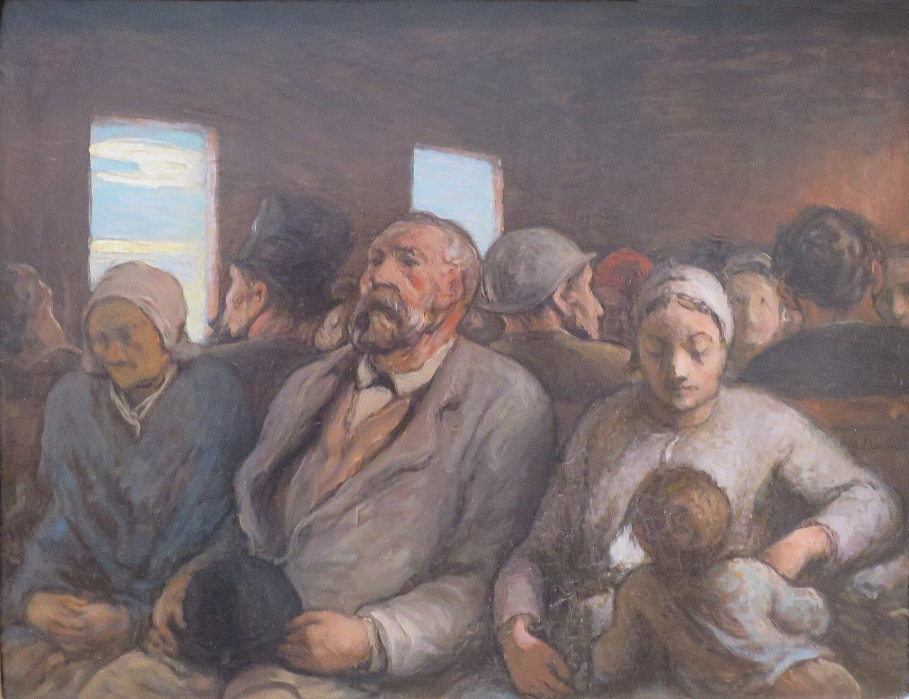

Optima Academy Online
An Education Experience Company
SOCIOLOGY
Quarter / Module
Q2 · Module 13
Urbanization, Technology, and Social Relationships
Reading
Text Study 13B
Author
Georg Simmel
Published
1907
🔊 READ ALOUD — LISTEN TO THIS PAGE
TEXT STUDY 13B
Sight, Hearing, and the Architecture of Contact
Simmel, Soziologie der Sinne (Sociology of the Senses), essay (1907), later part of Soziologie (1908)
💡 CONTEXT
Simmel’s sociology starts from interaction: society is made of countless small acts of people affecting one another. This short essay asks a question no one had asked systematically. If interaction runs through the senses, does it matter which sense carries it? Simmel argues that it does, because each sense gives people a different kind of access to one another, and so supports a different kind of bond. The essay follows the metropolis essay of 1903, which described the guarded mind of the city dweller. Here the question is how city dwellers actually perceive one another.
📊 THE ARGUMENT AT A GLANCE
WHAT EACH SENSE DOES TO CONTACT
THE EYELooking at someone makes you visible to them. Contact is mutual by structure.
THE EARHearing lacks that built-in return. You can hear without being heard.
SMELLTreated in the same comparative spirit, and more often a sense that divides people than joins them.
↓
THE CITYModern transit and crowds put people in view of one another for long stretches without speech: seeing without hearing.
Reciprocity is a property of the arrangement of contact, not only of the sense used.
📖 THE ARGUMENT, SECTION BY SECTION
1
The senses are sociological instruments
CLAIMWhat one person perceives of another, and how, shapes the relationship between them. The senses are therefore channels of association, not only biological equipment.
REASONIf society is the sum of reciprocal effects among individuals, the way those effects travel matters. A relationship carried by sight differs from one carried by sound or smell, because each gives different information and a different degree of mutual exposure.
ILLUSTRATIONA conversation across a table, a voice on the radio, and a face passed on a crowded street are three different kinds of contact, even though all of them involve other people. (Optima example, not Simmel’s.)
2
The eye: the mutual glance
CLAIMThe exchange of glances is the most direct and purest form of interaction between individuals.
REASONNo one can look at another person without becoming visible to that person. Giving and taking happen in the same act, so a look is reciprocal before either party decides anything. The glance carries almost nothing beyond the connection itself, which is why it is called pure.
EXAMPLETwo strangers whose eyes meet briefly both register that they have been noticed. Neither can arrange to see without being seen.
3
The face: reading a person
CLAIMSight is the sense through which a person is read as an individual, and the face is where that reading happens.
REASONThe face makes inner states visible to another person, to a degree that other perceptions do not. Sight gives the more lasting picture of a person, while speech conveys what passes in the moment, and what is seen of someone tends to frame how what they say is understood. A relationship with no face to read loses much of what lets one person judge another.
4
The ear: reception without a built-in return
CLAIMHearing differs from sight by lacking the reciprocity that the glance produces between one pair of eyes and another.
REASONA voice can reach a listener who does not reach back, and a listener can take in sound from someone unaware of being heard. Mutuality in speech has to be built through conversation. Sight supplies it automatically.
ILLUSTRATIONA broadcast or a recording is hearing without return. (Optima example, not Simmel’s.)

5
The city: seeing without hearing
CLAIMModern urban life puts people in a situation that earlier societies rarely produced: seeing one another continuously without speaking.
REASONBefore buses, trams, and railways, people were seldom placed for minutes or hours in view of strangers with no occasion to talk. Public transport and crowded streets make that the ordinary condition of city life. Visual impressions multiply while speech thins out, so people judge one another largely by sight.
CONNECTIONThis fits the metropolitan reserve of the 1903 essay: many glances, little exchange. Seeing without hearing is part of why the city dweller can be surrounded by others and still not be in contact with them.
6
Smell: a sense that sorts
CLAIMSimmel extends the comparison to smell, and treats it as a sense that more often separates people than binds them.
REASONSmell gives no objective picture of the other person; it registers inside the perceiver as immediate liking or aversion. That is why it sorts rather than joins, and Simmel links it to the physical distance that classes and groups keep from one another, which crowding in the modern city makes harder to keep. The method is the point: each sense is asked what kind of contact it makes possible.
⚖️ THE DISTINCTIONS THAT CARRY THE ESSAY
MUTUAL / ONE-SIDEDContact that returns automatically, as the glance does, versus contact that can run in one direction.
EYE / EARSight makes the person present and exposed. Hearing receives without a built-in return.
FACE / VOICEThe face shows a person to be read. A voice with no face shows less of the person.
SEEING / SPEAKINGThe city multiplies the first and thins out the second.
❓ THE STRONGEST OBJECTION
Reciprocity of the glance holds only when both parties can see each other. Someone can look at a person who cannot see back: through a window, from behind a camera, or at a recorded or streamed image. Sight can be made as one-sided as hearing once the arrangement allows it. So reciprocity belongs to the arrangement of contact rather than to the sense itself, and the argument needs that refinement.
A second objection runs the other way. In conversation, hearing is mutual too: each person hears the other. Simmel’s point concerns what the sense provides on its own, not what two people can build with speech, but the contrast between eye and ear is less sharp once people are talking.
🎯 FOUR QUESTIONS
- Why is the mutual glance called the purest interaction? What changes in a relationship when that built-in reciprocity is removed?
- Apply the eye and ear contrast to a technology of your choice: a phone call, a video call, a text thread, a livestream. Does it preserve the reciprocity of the eye, the asymmetry of the ear, or something Simmel has no category for?
- Why might a species with language still need such a developed capacity for reading faces? What is lost when text, or a voice with no visible face, substitutes for it?
- Compare this account of direct sensory contact with Simmel’s account of the money economy in Week 4, where relationships become calculable and impersonal. Is a screen-mediated relationship closer to a face-to-face relationship or to a monetary exchange? Defend the answer from both essays.
✏️ AFTER THE QUESTIONS
▶ Question 2: a video call, a text thread, and a livestream
A video call comes closest to the reciprocity of the eye: both parties can see and be seen at once, even through a screen. A text thread has neither the eye’s reciprocity nor the ear’s asymmetry in pure form. It substitutes a written trace for both, which is part of why tone is easy to misread. A livestream is close to pure asymmetry: the audience sees without being seen, the ear’s condition applied to sight. That last case shows reciprocity belongs to the arrangement, not the sense. Sight can be made one-sided once the technology allows it.
▶ Question 4: more like a face or more like money?
Both answers have a case, and the strongest response holds them together. Toward money: a feed or message thread reduces a person to what can be recorded and measured, and removes the involuntary mutuality of the glance. Toward the face: unlike a coin, a screen can still carry a face, a voice, and real information about another person’s inner state. Communications technology is not one thing sociologically. Some of what it carries behaves like money, matter-of-fact and calculable. Some behaves like a face, however degraded. Turkle’s worry, from Lesson 13.02, is that people may not always notice which one they are getting.
➡️ NEXT
1
Sociological Journal 13
Optima Academy Online · SOCIOLOGY · Quarter 2 · Text Study
Simmel, Soziologie der Sinne (1907)
© Optima Academy Online · An Education Experience Company